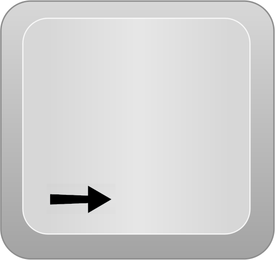
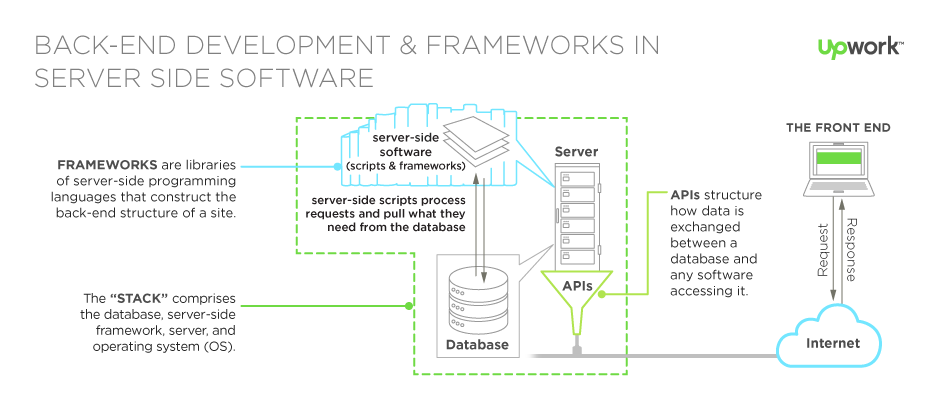

Die Pfeiltasten

 zum navigieren benutzen.
zum navigieren benutzen.
Eine subjektive Ansicht über die Umsetzung einer Webseite von Akram Alraai
Bevor solch ein komplexes Projekt angegangen wird, sollte man sich folgende Fragen stellen..
Moderne oder eher konservative Webseite?
Welche Technologien für Backend / Frontend?
Wie kann man das bestehende Konzept sinnvoll erweitern?
Welche Ideen lassen sich auf den ersten Blick nicht so leicht realisieren?
Was kostet der Spaß?
Moderne oder eher konservative Webseite?
In der Welt der Webentwicklung sollte man stets einen modernen Ansatz wählen. Denn:
"Gehe mit der Zeit, sonst gehst du mit der Zeit!"
Doch was ist ein moderner Ansatz?
Beispiele moderner Webseiten, e.g. AskCharlie, Slid.es, Worldsfairusa, Amsdesign, uvm. Mit einfachen Mitteln kann man einen positiven Eindruck beim User hinterlassen. Die Stärken liegen auf der Hand: Die Einfachheit der Bedienung. Der User muss nicht über mehrere Ebenen navigieren, wodurch er die Inahlte der Seite bewusster wahrnehmen kann. Gleichzeitig hat er die volle Kontrolle über die Geschwindigkeit, mit der die Informationen auf ihn einströmen, im Gegensatz zu vielen anderen dynamischen Techniken.
Welche Technologien für Backend /Frontend?
Backend

Databse: MySQL, SQLite und MongoDB
Server: Vorerst Amazon Web Services, später eigene Server ( e.g. Apache, J2EE)
Framework: Ruby on Rails (Ruby) oder Zend Framework (PHP)
Frontend


Wie kann man das bestehende Konzept sinnvoll erweitern?
Welche Ideen lassen sich auf den ersten Blick nicht so leicht realisieren?
grow
shrink
fade-out
visible only once
blue only once
highlight-red
highlight-green
highlight-blue